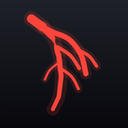

Emodynamist ricostruisce in 3D un arco a C, un cuore e l'albero coronarico e mostra che cosa vedrebbe il detettore da ogni angolazione, su iPhone, iPad e iPhone Duo.
Domande, problemi o idee: Contattaci. Rispondiamo di solito entro due giorni lavorativi. Dall'app: menu ⋯ › Informazioni › "Segnala un problema o proponi una funzione" (la versione viene aggiunta da sola).
Come cambio vista? Con le schede Modello, Scopia e Sala, in fondo allo schermo (sull'iPhone Duo in fondo alla colonna di lato).
Come cambio la lingua? Menu ⋯ › Impostazioni › Lingua: si apre la pagina dell'app nelle Impostazioni di iOS.
Funziona senza rete? Sì, sempre: l'app non si collega a internet.
Dove sono i miei dati? Solo sul tuo dispositivo. Vedi l'informativa sulla privacy.
Emodynamist è un simulatore didattico. Non è un dispositivo medico, non elabora immagini di pazienti e non dà indicazioni cliniche. L'anatomia è un modello medio.
Titolare dell’app: Maria Brotto. Ideazione e realizzazione: Alessandro Poggiana.
Emodynamist rebuilds a C-arm, a heart and the coronary tree in 3D and shows what the detector would see from any angulation, on iPhone, iPad and iPhone Duo.
Questions, problems or ideas: Contact us. We usually reply within two working days. In the app: ⋯ menu › About › "Report a problem or suggest a feature".
How do I switch views? With the Model, Fluoro and Lab tabs at the bottom of the screen (on iPhone Duo at the bottom of the side bar).
How do I change the language? ⋯ menu › Settings › Language: it opens the app's page in iOS Settings.
Does it work offline? Yes, always: the app never connects to the internet.
Where is my data? Only on your device. See the privacy policy.
Emodynamist is an educational simulator. It is not a medical device, it does not process patient images and it gives no clinical guidance. The anatomy is an average model.
App owner: Maria Brotto. Concept and development: Alessandro Poggiana.
Fragen, Probleme oder Ideen: Kontakt aufnehmen. In der App: Menü ⋯ › Info › „Problem melden oder Funktion vorschlagen“.
Ansichten wechselst du über die Tabs Modell, Fluoro und Labor. Die App funktioniert immer offline; deine Daten bleiben auf dem Gerät (Datenschutz).
Emodynamist ist ein Lernsimulator, kein Medizinprodukt.
Inhaberin der App: Maria Brotto. Idee und Umsetzung: Alessandro Poggiana.
Questions, problèmes ou idées : Nous contacter. Dans l'app : menu ⋯ › Informations › « Signaler un problème ou proposer une fonction ».
Les vues se changent avec les onglets Modèle, Scopie et Salle. L'app fonctionne toujours hors ligne ; vos données restent sur l'appareil (confidentialité).
Emodynamist est un simulateur pédagogique, pas un dispositif médical.
Propriétaire de l’app : Maria Brotto. Conception et réalisation : Alessandro Poggiana.
Preguntas, problemas o ideas: Contactar. En la app: menú ⋯ › Información › «Informar de un problema o proponer una función».
Las vistas se cambian con las pestañas Modelo, Escopia y Sala. La app funciona siempre sin conexión; tus datos quedan en el dispositivo (privacidad).
Emodynamist es un simulador didáctico, no un dispositivo médico.
Titular de la app: Maria Brotto. Idea y desarrollo: Alessandro Poggiana.